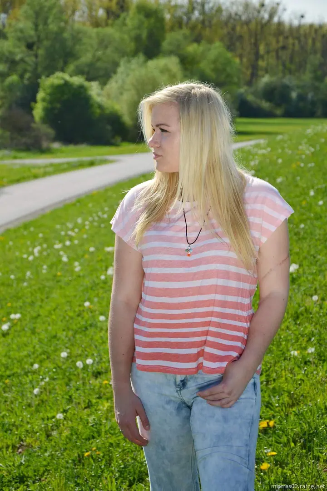
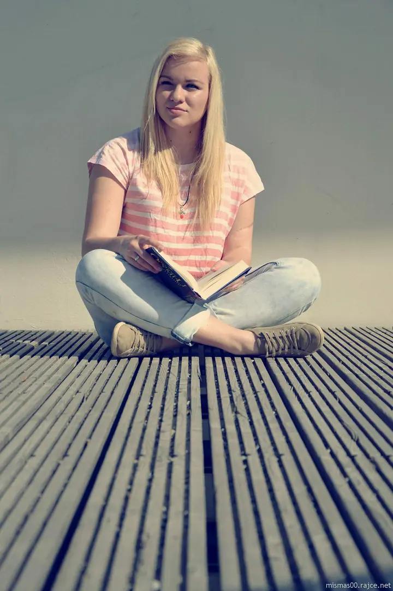
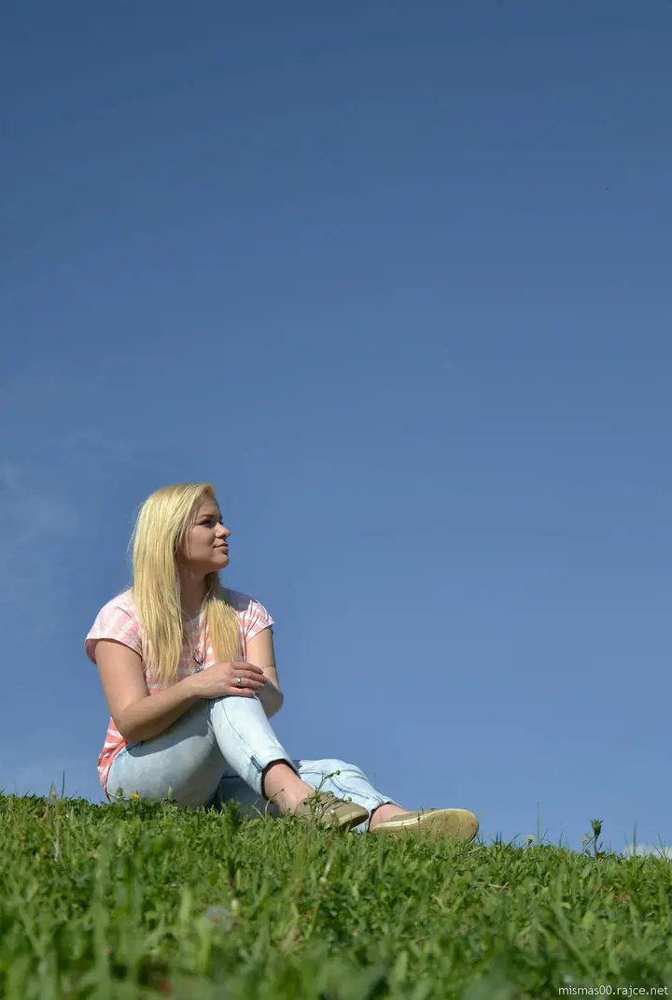

01 / 03
Portréty
Portréty jsou to, co fotím nejčastěji. Nejraději venku na denním světle, v parku, u vody nebo ve městě.
Zeptat se na termín→


Portréty venku, na denním světle
Zeptat se na termín →(01) Ahoj
Jmenuji se Míša Reitingerová a specializuji se hlavně na portréty , koně a církevní reportáže. Nejraději fotím venku na denním světle , kde stačí kus trávy, most nebo obyčejná lavička . Když vás některá fotka zaujme, napište mi a domluvíme se.
(02) Co fotím
01 / 03
Portréty jsou to, co fotím nejčastěji. Nejraději venku na denním světle, v parku, u vody nebo ve městě.
Zeptat se na termín→(04) Postup
Od první zprávy po hotovou galerii.
Krok 1 z 4
Pošlete mi e-mail, co byste chtěli nafotit: portrét, koně, nebo církevní akci.
Krok 2 z 4
Společně vybereme termín a místo. U portrétů nejčastěji venku, kde je hezké světlo.
Krok 3 z 4
Fotíme v klidu a bez spěchu. Nemusíte umět pózovat, s tím vám pomůžu.
Krok 4 z 4
Vybrané fotky vám pošlu v plné kvalitě, tak jak jsme se domluvili.
Stačí kus trávy, slunce a chvilka klidu.
(05) Za objektivem
Fotím hlavně portréty, koně a církevní reportáže. Každá z těch věcí je jiná, ale baví mě na nich totéž: zachytit člověka nebo zvíře tak, jak opravdu vypadá, bez zbytečného aranžování.
Portréty nejraději dělám venku. Stačí mi slunce, zelená louka, most nebo kašna ve městě a chvilka, kdy se přestanete hlídat. Pak vzniknou fotky, na kterých se poznáte.
Fotky ze svých reportáží dávám do alb na Rajčeti, kde jich je už přes sedm a půl tisíce. Když se vám některá zalíbí a chcete ji v plné kvalitě, stačí mi napsat e-mail. Ráda se s vámi domluvím.
Míša
Míša Reitingerová · Fotografka portrétů, koní a církevních akcí
Nejlépe e-mailem na mismas00@centrum.cz. Napište mi, o jaké focení máte zájem, a domluvíme podrobnosti.
Ano. Napište mi, o kterou fotku jde, a ráda se s vámi domluvím.
Na všechny fotky se vztahují autorská práva. Prosím, neodstraňujte z nich copyright a neořezávejte je.
Ano, koně patří k tomu, na co se specializuji. Stačí mi napsat, kde a jak byste si focení představovali.
(07) Kontakt
Napište pár vět o tom, co si představujete, a termín, který se vám hodí.
mismas00@centrum.cz